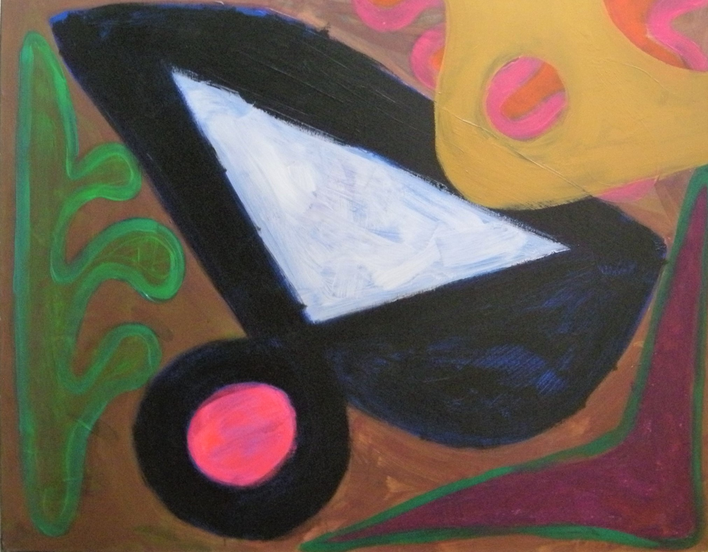
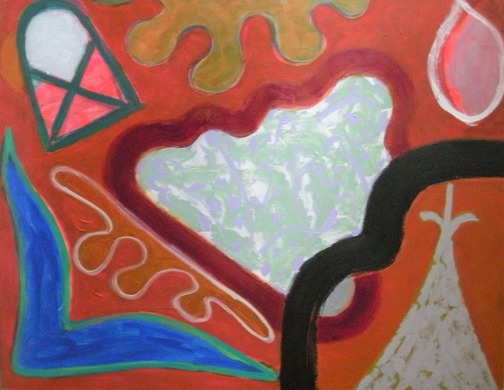
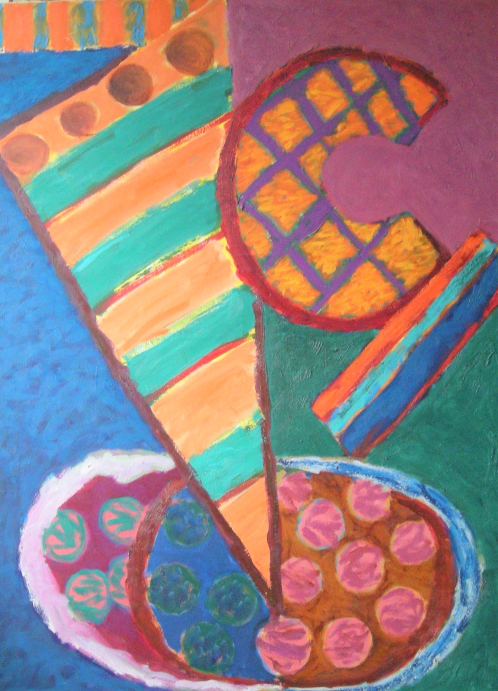
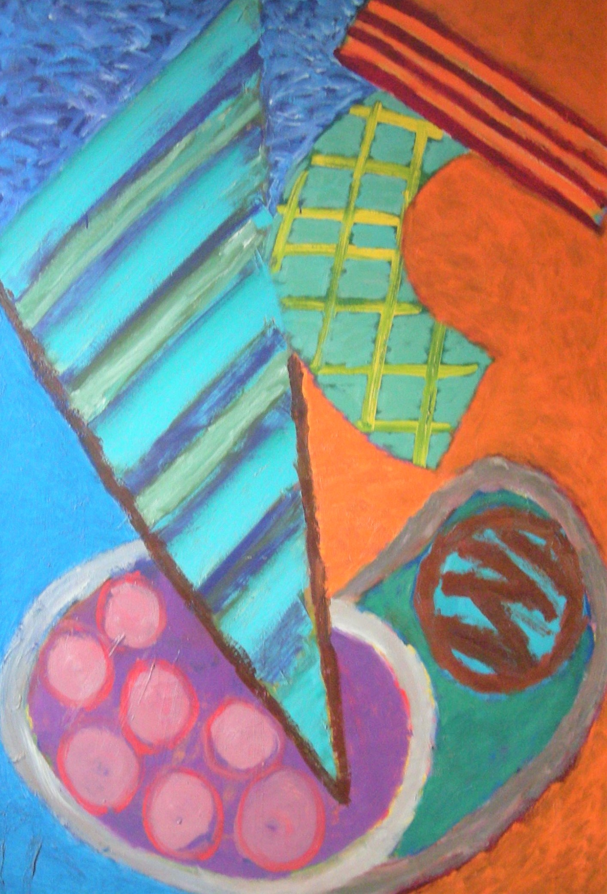
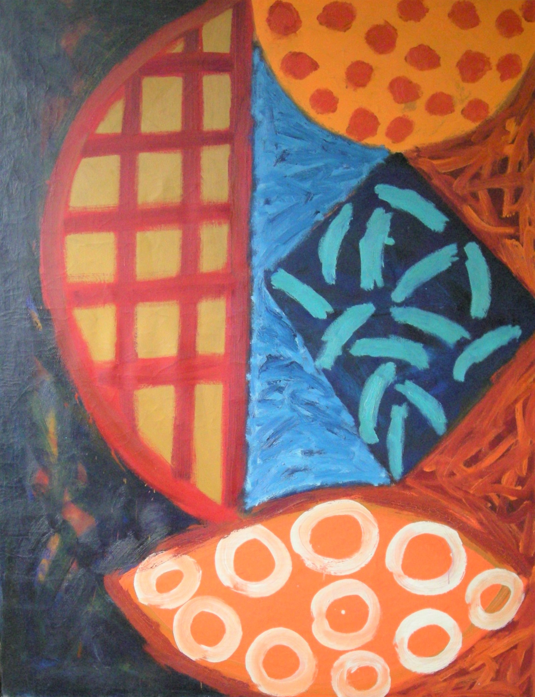
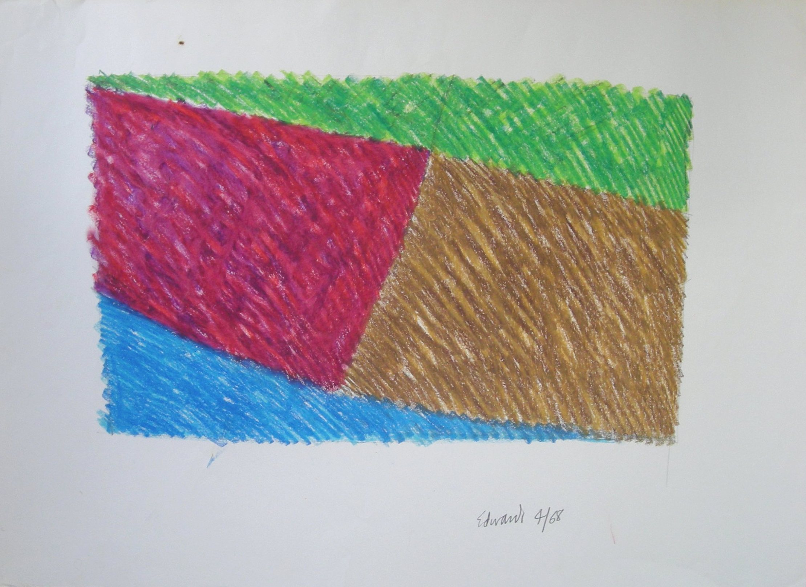
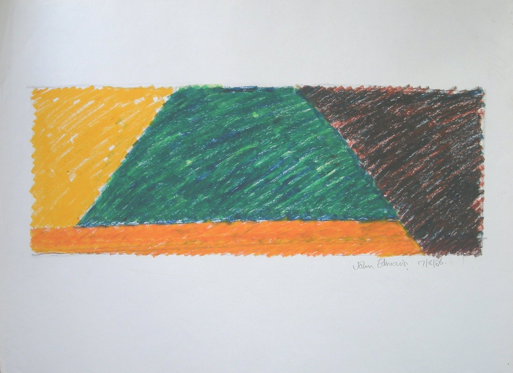

John Edwards
1938 – 2009
Artist Biography
John Edwards was born in London and studied at Hornsey College of Art, Leeds University and at l'Ecole Nationale Supérieure des Arts Visuels, Brussels. An abstract painter and sculptor, Edwards was a rising star on the British art scene in the late 1960s and 70s but also enjoyed acclaim in the US and India. He taught at the School of Visual Arts in New York and Syracuse University before serving as head of painting and sculpture at St Martin's School of Art, London, in the 1980s. After retiring from teaching, he maintained a prodigious output of paintings and sculptures over the next 20 years, and showed work regularly in exhibitions in London and abroad. He spent the last decade of his life in Jaipur, India which he considered his spiritual home and where his work was highly regarded. His forms were influenced by the jazzy, improvisational techniques of the abstract expressionist painters in New York but his paintings had an architecture that resembled sculptural forms and, conversely, his sculptures had a painterly touch, often light and airy. The curator and critic Jill Lloyd observed: "The power and vitality of the work has much to do with an interplay of opposing forces. Edwards's art is reductive; abstract language of forms is counterbalanced by the artist's emotive and lyrical sense of colour." The Rowan Gallery in London gave him nine shows from 1967 to 1981, and he also had shows in Syracuse, Washington, San Francisco, Turin, Jaipur and New Delhi. His work in both mediums appeared in many British group shows in Warsaw, Amsterdam, Madrid, the Guggenheim Museum in New York, and a British Council show in Tokyo, among others. His works can also be found in collections of the Arts Council of Great Britain, the British Council, the Contemporary Art Society, the Fitzwilliam Museum in Cambridge, the European parliament, the Gulbenkian Foundation, the Power Institute of Fine Arts in Sydney and the Guggenheim.

Chimera, 2008




